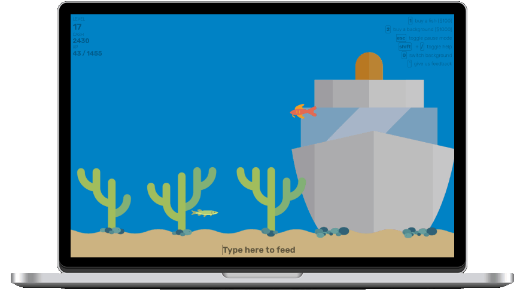

What is Typing Aquarum?
Typing Aquarium is a petting simulation game by using keyboard. By typing, you can feed the fish and get XP and cash points that you can use for buying more fish and exclusive aquarium backgrounds.
As you can see below.
 Wood vector created by upklyak - www.freepik.comCommon instructions.
How to play Typing Aquarium?
You can simply play Typing Aquarium by simply feed the fish by typing the word appeared (on the fish) on the input space below the aquarium. Remember, fish can died if you don't feed them by 10 seconds since the word appeared.
What are XP and cash?
XP is the point you can use to level up, meanwhile cash is the point you can use to buy more fish and exclusive backgrounds. You can earn them by keep feed the fish to gain the cash and XP points.
How can I buy fish and wallpapers?
You can buy the fish by pressing 1 or wallpaper by pressing 2 on your keyboard. Remember that fish and background have a price so you need to collect cash to buy them.
What happened if all my fish are died?
Your game is over and your progress will be restarted. You can restart your game by pressing Ctrl + R
I still don't understand how to play. What should I do?
Don't worry. When you are playing, there is some helper on the top right side of the aquarium where tells you how to buy fish, buy background, pause the game, and more.
Can I give feedback to this game?
Feedbacks are open to improve Typing Aquarium better by clicking this. You can also typing ` when you are currently playing the game. Don't worry, Your game will be paused automatically when you are filling the feedback form.